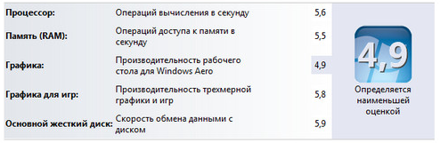

Индекс производительности
Индекс производительности Windows — служба операционной системы Windows, позволяющая дать тесты производительности компьютера. Оценка определяется не общим количеством баллов, а количеством баллов самого непроизводительного.
В Windows 8
максимальное количество баллов 9,9.
В Windows 7 — 7,9.
Минимальное количество баллов в обоих
случаях —
1.0
Индекс производительности Windows позволяет дать оценку следующим компонентам по определённым характеристикам:
- Процессор - количество операций вычисления в секунду
- Оперативная память - количество операций доступа к памяти в секунду
- 2D-графика - производительность графики для рабочего стола и 2D-игр
- 3D-графика - производительность 3D-игр и приложений
- Основной жёсткий диск - скорость записи и скорость чтения жёсткого диска
Чтобы узнать индекс производительности Windows для компьютера, работающего под управлением Windows 7, нужно зайти в Свойства системы через Панель управления. Нажав в окне свойств на ссылку Индекс производительности Windows, получим подробные результаты теста в следующем виде:
В версиях Windows 8.1 и выше графического интерфейса для запуска теста производительности компьютера нет :(